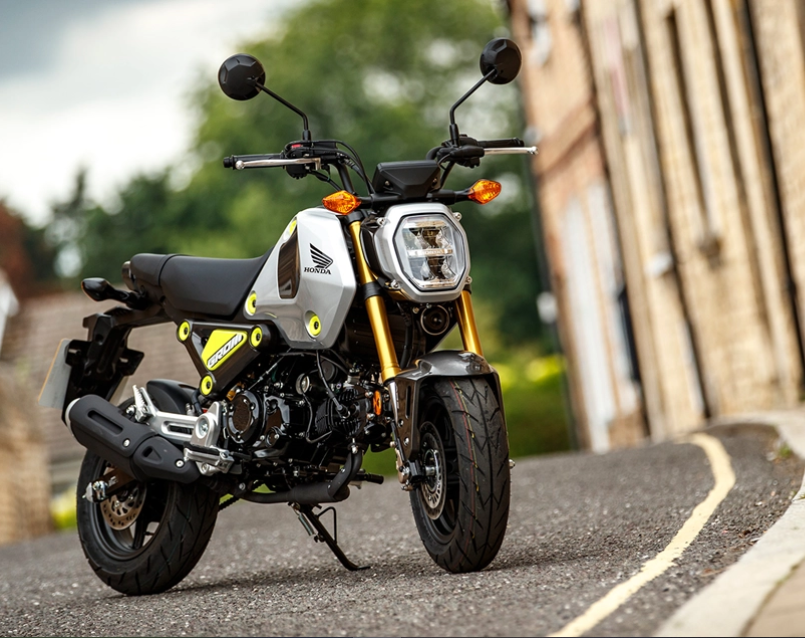

Honda CB125F
Rode o acelerador e avance sem esforço. A CB125F abre-lhe todo um novo mundo à sua frente. Esta moto pode ser o início de uma nova aventura. Reformulada desde as rodas, com um motor eSP altamente eficiente e de um chassis de grande precisão, é mais leve, muito mais económica e proporciona o mesmo excelente desempenho em cidade. Onde vai? A decisão é sua, e agora pode escolher.
Honda PCX 125
Esperar por um táxi dispendioso ou por outro transporte público atrasado está fora de questão com a PCX125 basta carregar no botão de arranque e iniciar a viagem. O corpo elegante e ágil permite escapar ao trânsito urbano com facilidade, levando-o até onde precisa de ir com estilo e sem atrasos.
Honda MSX125 Grom
Desde 2013, a nossa MSX Grom (Mini Street X-Treme) tem sido o transporte preferido de toda uma nova geração de jovens condutores em todo o mundo. É fácil ver porquê: aparência singular, dimensões compactas e especificações de moto de grande dimensão, suspensão e travões. Acrescente um animado motor de 125 cc e terá o parceiro perfeito para a vida urbana atarefada. E agora há uma nova MSX Grom no bairro, com potência adicional, uma mudança extra e ainda mais estilo.
Espero que tenha gostado e queira comprar uma moto!